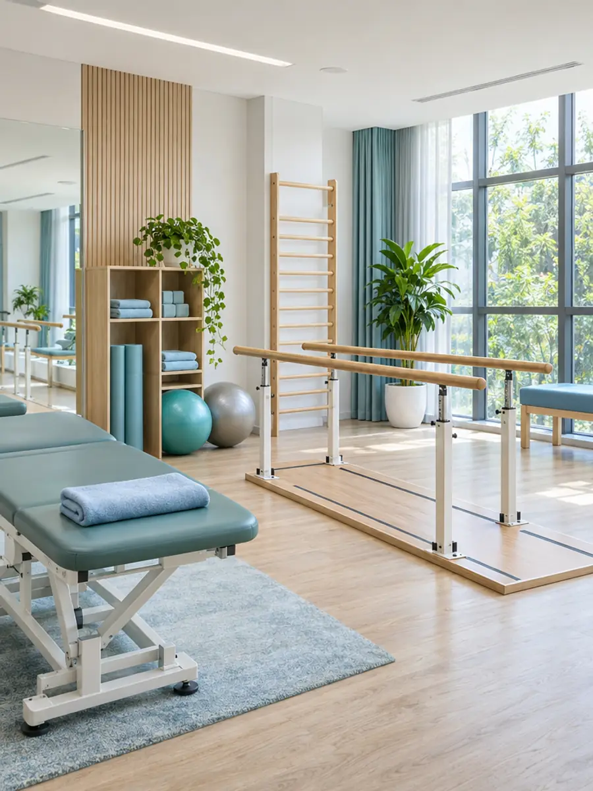
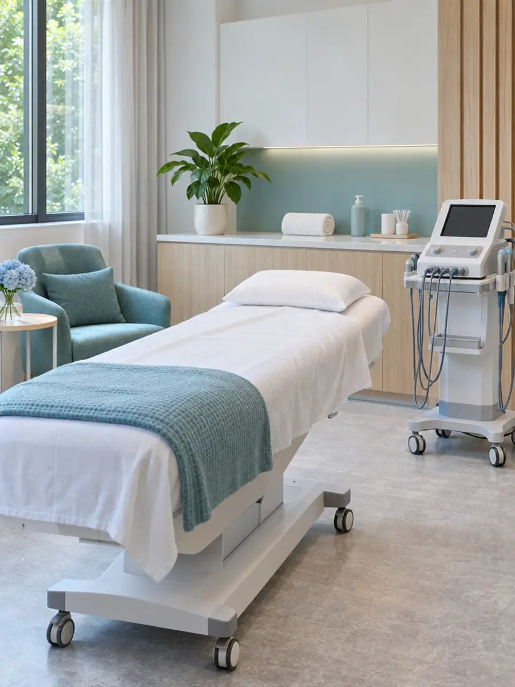
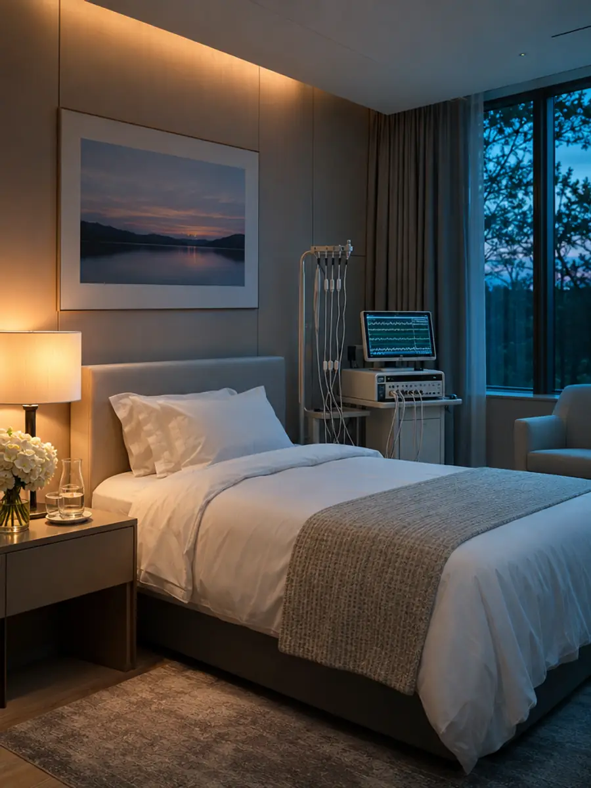
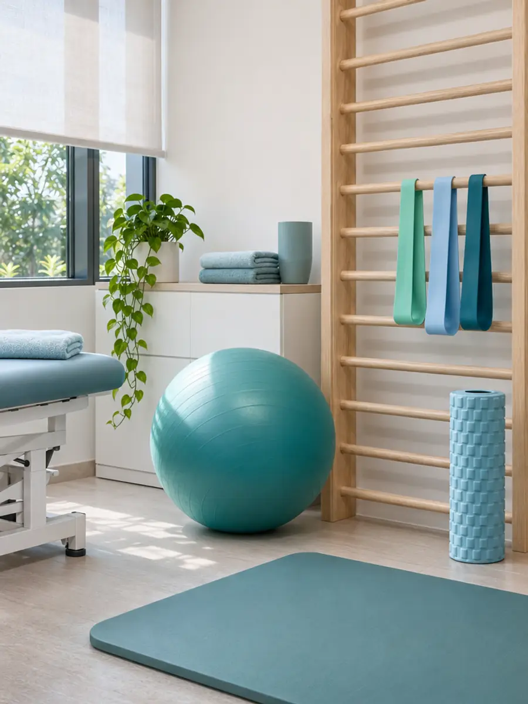
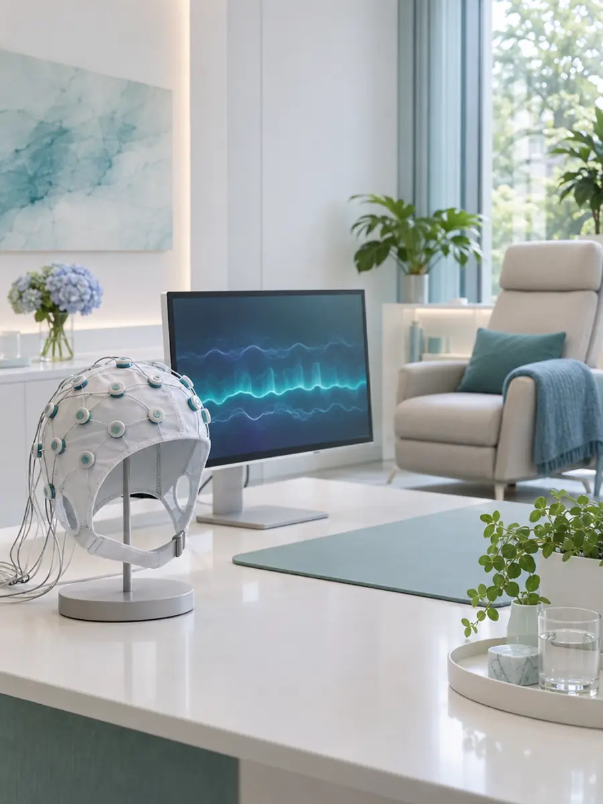

שירותים
שירותי מרכז רפואי רב תחומי המשלבים פיזיותרפיה, אבחון מתקדם וטיפול טכנולוגי מותאם לכל שלבי ההחלמה בסופיה מדיקל, עם ליווי מקצועי ושירות מסור בפריסה ארצית.





-
סופיה מדיקל מציעה שירותי שיקום רפואי מתקדמים הכוללים הערכה ראשונית, טיפול ממוקד ומעקב אחר ההתקדמות. שילוב הידע הקליני והמכשור החדשני מאפשר לשפר יציבה וניידות, להפחית כאב ולהחזיר את המטופלים לחיים פעילים ועצמאיים.
-
טכנולוגיית recoveriX, העתיד של השיקום הנוירולוגי בסופיה מדיקל. שילוב מתקדם של ממשק מוח מחשב, משוב חזותי וגירוי חשמלי תפקודי, לעידוד פלסטיות מוחית ושיפור התפקוד המוטורי לאחר שבץ או נזק מוחי. טיפול מותאם אישית בליווי צוות רב תחומי.
-
טיפול באמצעות פולסים אלקטרומגנטיים (PEMF) הוא טיפול לא פולשני המשתמש באנרגיה אלקטרומגנטית מבוקרת לעידוד תהליכים ביולוגיים הקשורים להחלמה ולהפחתת כאב. במסגרת שירותי סופיה מדיקל, הטיפול מותאם אישית למצבו ולצרכיו של המטופל, ומהווה חלק ממערך שיקומי מקצועי המשלב טכנולוגיה רפואית מתקדמת עם ליווי צוות רב תחומי.
-
פיזיותרפיה ברמה גבוהה המשלבת טיפול ידני מתקדם, מכשור חדשני וליווי מקצועי, לשיפור תנועה, חיזוק הגוף וחזרה לשגרה במהירות ובבטחה.
סופיה מדיקל: מכון פיזיותרפיה מוביל בכפר סבא.
-
סובלים מכאב שלא עובר?
טיפול בגלי הלם יכול להיות חלק מתוכנית טיפול מותאמת אישית, במיוחד במצבים של כאבים כרוניים ובעיות מסוימות בגידים ובמערכת השריר שלד. הטיפול עשוי לסייע בהפחתת כאב, בשיפור התפקוד ובחזרה הדרגתית לפעילות, וניתן לשלבו עם פיזיותרפיה וטיפולים שיקומיים נוספים בהתאם למצב ולמטרות הטיפול.
-
סופיה מדיקל: מכון שינה מוביל בכפר סבא
השירות כולל בדיקות שינה מלאות עם EEG לילדים ולמבוגרים, המתבצעות הן במכון השינה והן בבית המטופל, תוך שימוש בטכנולוגיות מתקדמות ובפיקוח של רופאים מומחים להפרעות שינה.
במרכז ניתן לקבל אבחון מקיף וטיפול מלא להפרעות שינה מכל הסוגים, משלב הבדיקה ועד התאמת תוכנית טיפול אישית ומעקב רפואי מקצועי.
-
שירות חוות דעת רפואיות ושיקומיות במרכז סופיה מדיקל מתבסס על עבודת צוות רב תחומי, ידע קליני נרחב וטכנולוגיה רפואית מתקדמת. במסגרתו מתקבלת חוות דעת מקצועית, אמינה וברורה, המשקפת את מצבו הרפואי והתפקודי של המטופל ואת הצרכים להמשך טיפול ושיקום.
-
CES (Cranial Electrotherapy Stimulation) היא טכנולוגיה רפואית מבוססת ראיות המפעילה זרם חשמלי עדין בתדר נמוך על פני הגולגולת לצורך ויסות פעילות עצבית במוח.
-
בדיקות אלקטרופיזיולוגיות מתקדמות להערכת תפקוד העצבים והשרירים.
באמצעות גירוי עדין ורישום פעילות חשמלית ניתן לזהות פגיעות עצביות, מחלות שריר או בעיות הולכה עצבית, ולאבחן מצבים כמו נימול, חולשה או כאב ממקור עצבי, לצורך התאמת טיפול מדויק ואישי.
-
צוות מומחים בתחום רפואת כאב משלב שיטות מתקדמות וחדשניות לניהול כאבים.
-
בדיקת EEG (אלקטרואנצפלוגרם) מודדת את הפעילות החשמלית של המוח ומסייעת באבחון הפרעות נוירולוגיות והפרעות שינה.
במרכז סופיה מדיקל מבוצעות הבדיקות לילדים ולמבוגרים בסביבה רגועה ומותאמת, תוך שימוש בציוד מתקדם ופענוח מקצועי על ידי רופא מומחה.
-
שיטת טיפול יעילה להפחתת כאב, שיפור זרימת הדם ואיזון מערכת העצבים.
במרכז סופיה מדיקל הדיקור מבוצע על ידי מטפלים מוסמכים ומשלב ידע רפואי מודרני עם עקרונות הרפואה הסינית, לטיפול במצבים של כאב כרוני, מתח, נדודי שינה והפרעות תפקוד שונות.
-
בסופיה מדיקל אנו מציעים פתרונות נשימתיים מתקדמים לטיפול בהפרעות שינה, דום נשימה וקשיי נשימה כרוניים, תוך התאמה אישית לצורכי המטופל וליווי רפואי צמוד.
-
שירות שיקומי מתקדם המיועד למטופלים לאחר קטיעות, פציעות, ניתוחים או מצבים נוירולוגיים.
במרכז סופיה מדיקל מתבצעת התאמה אישית של פרוטזות, סדים ואביזרי תמיכה בהתאם למבנה הגוף, רמת התפקוד והצרכים הייחודיים של כל מטופל, במטרה להשיב ניידות, יציבות ועצמאות, להפחית כאב ולשפר את איכות החיים.
-
שירות הבית של סופיה מדיקל מעניק למטופלים טיפול רפואי ותפקודי מקיף בביתם, כולל בדיקה קלינית, הערכה תפקודית והתאמת תוכנית טיפול אישית. השירות משולב עם צוות רב מקצועי במרכז, במטרה לספק רצף טיפולי מלא, נגיש ומותאם לצרכים הייחודיים של כל מטופל.
-
מעניק מענה מקצועי ודיסקרטי להפרעות במערכת השתן ובהתפקוד המיני, כולל מצבים מורכבים לאחר פגיעות נוירולוגיות וניתוחים.
הטיפול מבוסס על גישה רב תחומית ותוכנית אישית מותאמת לשיפור התפקוד, הביטחון ואיכות החיים.
השאירו פרטים ונחזור אליכם
קיימים הסדרים עם כללית מושלם, BWell ומגדל לייעוץ רפואי בתחום השיקום וטיפול בכאב